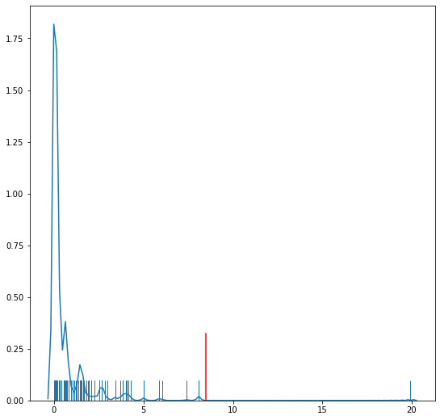
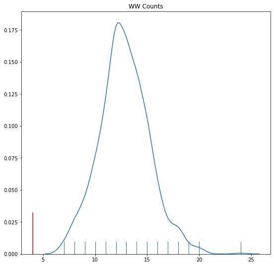

This page was generated from docsrc/notebooks/joincounts.ipynb.
Interactive online version:

Join Counts for Spatial Autocorrelation in Binary Attributes¶
[1]:
import libpysal as lps
import numpy as np
import esda
import matplotlib.pyplot as plt
%matplotlib inline
[2]:
w = lps.weights.lat2W(4, 4)
y = np.ones(16)
y[0:8] = 0
np.random.seed(12345)
from esda.join_counts import Join_Counts
jc = Join_Counts(y, w)
jc.bb
[2]:
10.0
[3]:
jc.crosstab
[3]:
| Neighbor | W | B |
|---|---|---|
| Focal | ||
| W | 10.0 | 3.0 |
| B | 1.0 | 10.0 |
[4]:
jc.expected
[4]:
| Neighbor | W | B |
|---|---|---|
| Focal | ||
| W | 5.958333 | 7.041667 |
| B | 5.041667 | 5.958333 |
[5]:
jc.chi2
[5]:
8.479632255856034
[6]:
jc.chi2_p
[6]:
0.003591446953916693
[7]:
jc.p_sim_chi2
[7]:
0.002
[8]:
import seaborn as sns
[9]:
f, ax = plt.subplots(1, figsize=(9, 9))
sns.distplot(jc.sim_chi2, rug=True, hist=False, ax=ax)
plt.axvline(jc.chi2, 0,0.17, color='r')
[9]:
<matplotlib.lines.Line2D at 0x7f92d86ed340>

[10]:
f, ax = plt.subplots(1, figsize=(9, 9))
sns.distplot(jc.sim_bb, rug=True, hist=False, ax=ax)
plt.axvline(jc.bb, 0,0.17, color='r')
plt.title('BB Counts')
[10]:
Text(0.5, 1.0, 'BB Counts')

[11]:
f, ax = plt.subplots(1, figsize=(9, 9))
sns.distplot(jc.sim_bw, rug=True, hist=False, ax=ax)
plt.axvline(jc.bw, 0,0.17, color='r')
plt.title('WW Counts')
[11]:
Text(0.5, 1.0, 'WW Counts')

[ ]: